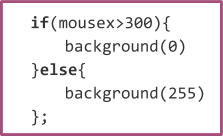
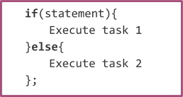
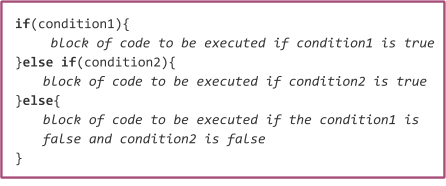

Overview
This learning activity builds on the students’ knowledge of conditional statements. They will use conditional statements to create a sketch of a traffic light that changes colors based on the mouse position.

Overview
This learning activity builds on the students’ knowledge of conditional statements. They will use conditional statements to create a sketch of a traffic light that changes colors based on the mouse position.
Suggested Duration
45 - 90 minutes
Objectives
Students will be able to:
Student Outcomes
Abstraction
Algorithms
Programming
Vocabulary
| Conditional Statements | A set of rules performed if a certain condition is met. |
|---|---|
| Boolean Expression | A logical statement that is either TRUE or FALSE. |
| Else | The second half of a conditional statement, covers every outcome not specified in if |
Resources
Else
Now that we know how to make things happen in our sketch when a condition is met, we 'll increase the possible results of our conditionals by introducing one more line of code.
If you think about how we speak as humans, we use conditionals all the time. "If it's cold outside, wear a coat." "If you're hungry, have a snack." These statements are often followed by "else" statements, or "otherwise." "If it's nice out, play outside, otherwise, play inside."
We can do the same in code.

These lines of code tell the program to draw a black background if the x position of the mouse is greater than 300, and it also tells the program what to do if the mouse is not greater than 300. Can you predict what's going to happen is the mouse position is not greater than 300?
If the statement is true, the program will run task 1. If the statement is false, the program will run task 2.

In this example, a square will be drawn if the mouse is on the right side of the screen, or an ellipse if it's on the left.
Student Exercise 1: Use "if" and "else"
Return to your project from the previous lesson and add "else" to your conditional. Make sure you "duplicate" your project first, and work on the new copy.
Hint: Think about what should happen to your shapes when the condition is false -- What would be its color, size or location? How does it look before the condition is met?
Else If
We can use "else" to add more possible outcomes to our sketches. Since there are often more than two possible conditions that we want to work with, we can instruct the program to perform different tasks based on a range of conditions.
I might want to tell someone that if it's cold they should wear a coat, but I also may want to say:
"if it's freezing, wear a coat,
if it's cold, wear a jacket,
otherwise just wear a sweater."
We can do this by adding "else if" to our conditionals between "if" and "else."

The program will test each condition in order. As soon as one condition evaluates to true, the code inside those brackets is executed and the program continues after the statement. In the following sketch we test the location of the mouse, and at every 100 pixels, we draw an ellipse close to it. Notice how we begin with the highest value.
Student Exercise 2: Debug Else If
Try flipping the order of the example. Instead of starting with mouseX>500, begin with mouseX>100 and increase the value in each "else if and else statement."
You should notice that the first two ellipses are drawn and then the second remains in the same location as you move your mouse to the right. Why do you think that is? Can you debug it?
The code exits the loop as soon as one condition evaluates to true, which is why the the rest of the ellipses are not drawn. As soon as you move your mouse to a greater x-position than 100, the conditional evaluates to true, and the program skips the rest of the conditionals, so you only see the ellipse drawn at 150. (Reference)
Now try removing "else." Just write a series of "if" statements. You will notice that as soon as they are separated into separate statements, when they all evaluate to true, they will all run.
After all, a mouseX position that is greater than 500, is also greater than 400, 300, 200, and 100. If they are all true, the code in all of their brackets will be executed. When you use "else if" the program will only run the first conditional that evaluates to true. This is important because now you can have a sketch that will do multiple things, but only one at a time if a condition is met.
Student Exercise 3: Make A Traffic Light
Use conditionals to program a traffic light that changes colors according to the position of your mouse. Only one ellipse can light up at a time.
Things that should be in your sketch in your code:
One rectangle with three ellipses inside of it and stacked vertically. Something that looks like a…. Traffic light!
Top circle should turn red if condition1 is met
Middle circle should turn yellow if condition 2 is met
Bottom circle should turn green
There are many ways to go about this. In the example below I created variables for each color and then changed the value of that variable based on the position of the mouse.
I used the built in variables for colors. If you are not in need of a particular shade of a color. You can add a color by writing the name of the color is single quotes.